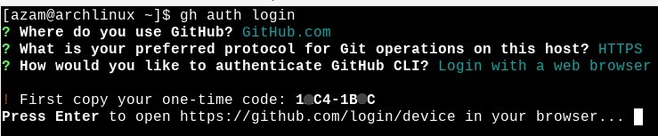
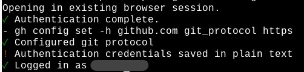

Using github in website is fine,but in the terminal it's cool. In this blog I going to tell you how you can use github in the terminal.
First, you need to install git and github-cli in your pc. So:
- for arch:
sudo pacman -S git github-cli
git config --global user.name "name"git config --global user.email "email"
git config --global --list
Once configuration file is done, move to the directory, that you want to upload as github repository.
There type: git init to initialize git in that folder. Now, type:
gh auth login
GitHub.com >> HTTPS >> Login with a web browser. If you have done everything correctly, you should see something like this.

Copy or remember that 8 digit code, then press enter to continue in a browser session. Do accordingly as the GitHub website says to connect to the github.com. Once everything is done, you should see something like this:

If you see you github id name in the logged in as section, you are all set. To verify that, type: gh auth status
Now you are logged in inside the termianl to your github web. Move to the directory which you want to upload to the github. There at first you need to initialize git.
git init
gh repo create repo_name --public --source=.
Now we need to add this repository in our remote repository section of git local. For that,
git remote set-url origin https://github.com/your-github-account/repo_name
- To add all the file:
git add . - To commit the file to local git:
git commit -m "first commit" - To shift to main branch:
git branch -M main - To push to the main branch:
git push -u origin main
Congratulations! You have successfully uploaded your code to github web accout usigng just the terminal.